LatinoFlix

Perfil
La víspera de la graduación de la universidad, seis mejores amigos se embarcan en un épico fin de semana de celebraciones con un trágico final. Casi veinte años después, los supervivientes se ven obligados a reunirse cuando un chantajista amenaza con revelar la verdad de esa fatídica noche.
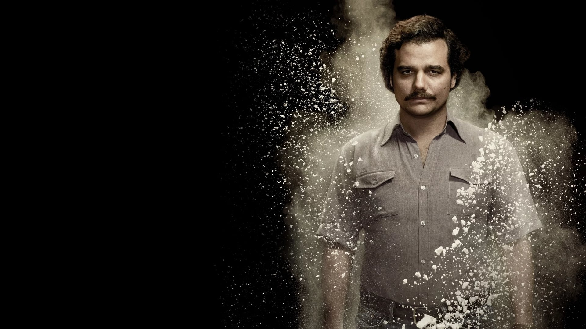
NarcosRetrata la batalla entre Pablo Escobar contra el gobierno colombiano respaldado por Estados Unidos.
Selena y su familia enfrentarán desafíos para mantenerse unidos y cumplir el sueño de vivir de la música.
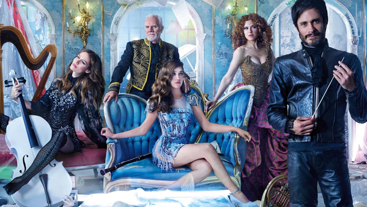
Mozart in the JungleHailey aspira a entrar a la sinfónica de Nueva York y conoce a Gustavo, el excéntrico director de orquesta.
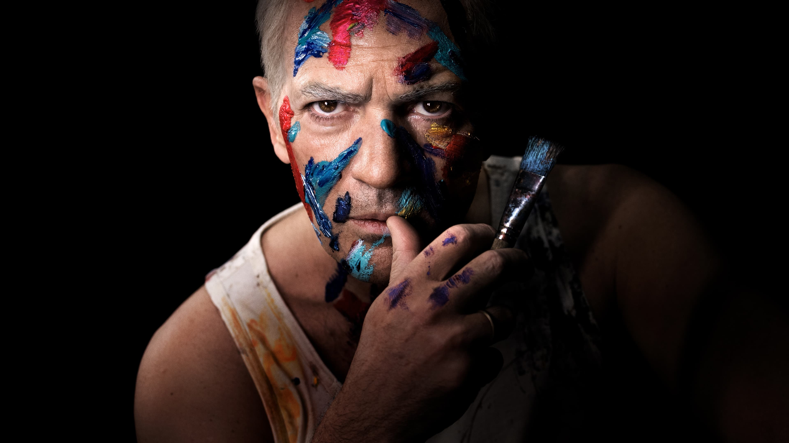
Genius: PicassoBiopic del genio español Pablo Picasso ambientado en la década del '30
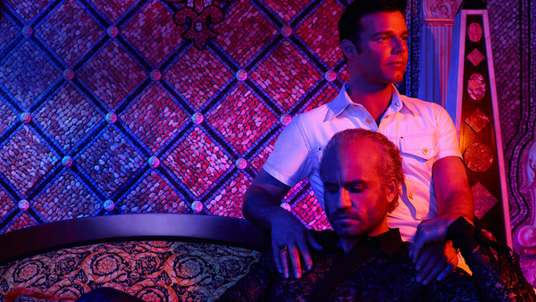
American Crime Story: VersaceEl crimen del diseñador Gianni Versace conmocionó al mundo en 1997 y desenmascaró al asesino en serie Andrew Cunanan.
Una mamá soltera lleva adelante un hogar lleno de hormonas revueltas, a pesar de la "ayuda" de la abuela.
Retrata la batalla entre Pablo Escobar contra el gobierno colombiano respaldado por Estados Unidos.
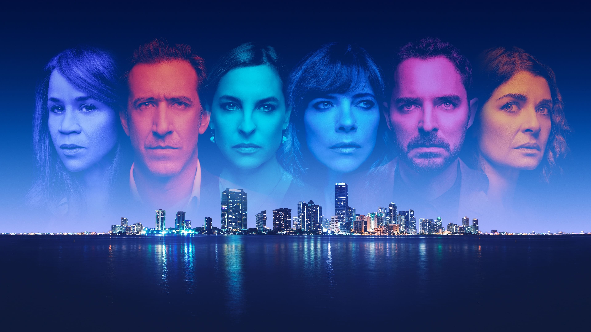
Now and ThenUn secreto acecha a seis ex amigos de la Universidad veinte años después
Elena Roarke debe enfrentar las responsabilidades que asumió como administradora de esta misteriosa isla.
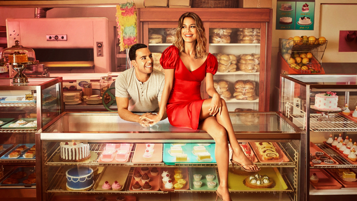
The Baker and the BeautyEl panadero Daniel García conoce a la supermodelo Noa Hamilton en Miami. ¿Podrá sobrevivir esta pareja al choque cultural?.
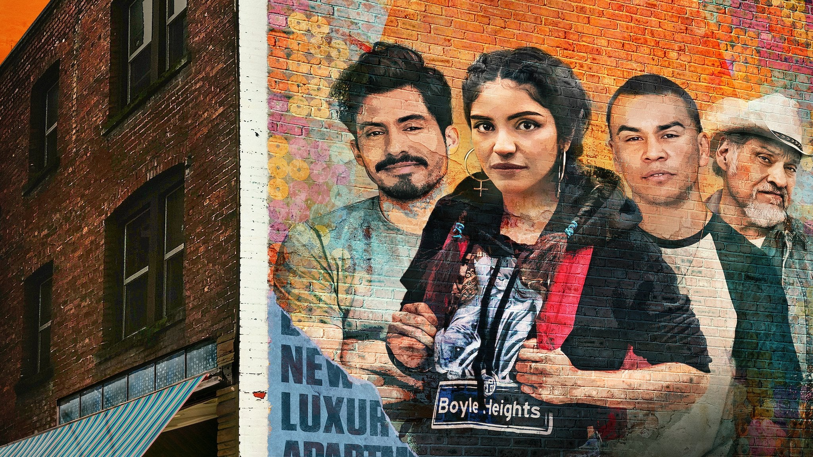
GentefiedTres primos latinos resuelven sus diferencias mientras trabajan para mantener a salvo la tienda de tacos de su abuelo.
Cuando las hermanas Emma y Lyn regresan a su hogar del Este de los Ángeles, descubrirán secretos impensados de su madre.
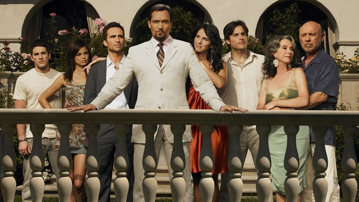
CaneAlex Vega asume el control de los negocios del ron de una millonaria familia cubanoamericana de Miami.
Un secreto acecha a seis ex amigos de la Universidad veinte años después
Cuando Nell Stevens empieza a escribir obituarios, recibe consejos de vida de una fuente poco probable (y muerta).
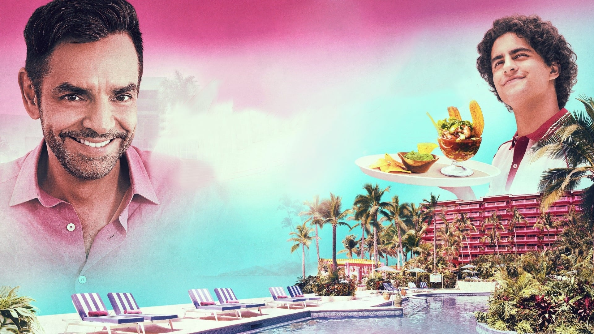
AcapulcoMáximo Gallardo descubrirá que su trabajo en el mejor resort de Acapulco será mucho más difícil que lo anhelado.
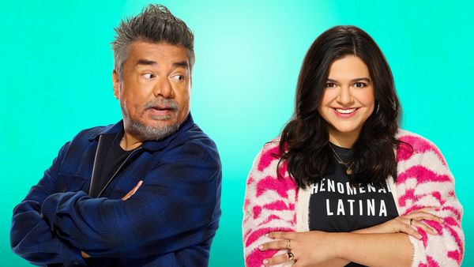
Lopez vs. LopezGeorge Lopez vuelve con una comedia familiar de clase trabajadora
Después de 15 años, los niños García han crecido y ahora tienen sus propios hijos.
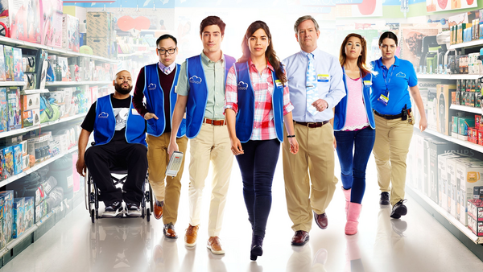
SuperstoreUnos empleados fuera de lo común se soportan entre ellos mientras lidian con las tareas cotidianas.
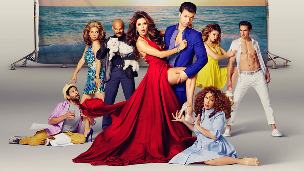
TelenovelaEl drama tras las cámaras supera con creces el que se ve delante de la telenovela más popular de América Latina.
Cuando Nell Stevens empieza a escribir obituarios, recibe consejos de vida de una fuente poco probable (y muerta).
Jackie tiene que alojar en su casa a su hermana y marido luego que su dinero se les acabe.
Un crimen destapará los secretos de un lujoso y prestigioso hotel familiar en Miami Beach.
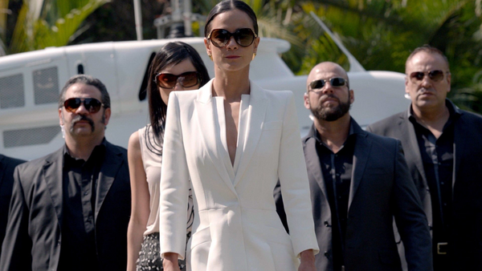
Queen of the SouthObligada a trabajar para un cártel que acaba de matar a su novio, Teresa depende de su astucia para sobrevivir.
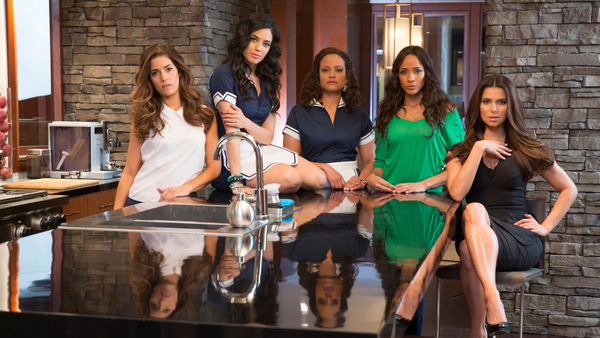
Devious MaidsCuatro criadas latinas con ambiciones y sueños trabajan para los ricos y famosos en Beverly Hills.
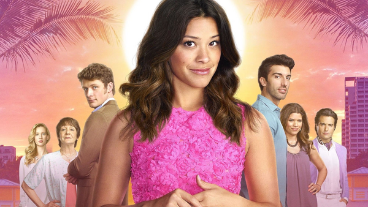
Jane The VirginUna devota joven descubre que, por error, ha sido inseminada artificialmente.
Con su inteligencia, Betty Suárez rompe los estereotipos y se abre camino en la competitiva revista Mode.
Jackie tiene que alojar en su casa a su hermana y marido luego que su dinero se les acabe.
Un condecorado SEAL de la Marina se convierte en investigador privado en Hawai
En su nueva etapa en la Policía de Los Ángeles, Syd Burnett es acompañada por Nancy McKenna, que tiene un oscuro pasado.
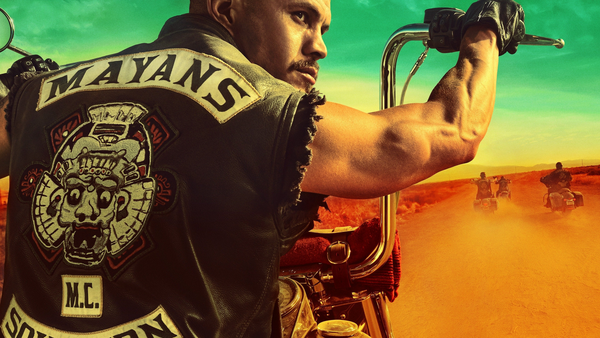
Mayans M.C.El sueño americano de Ezekiel "EZ" Reyes se ve amenazado por la violencia del cártel.
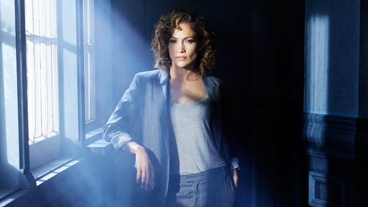
Shades of BlueHarlee Santos, una madre soltera y policía corrupta es reclutada para trabajar de incógnito en un grupo anticorrupción del FBI.
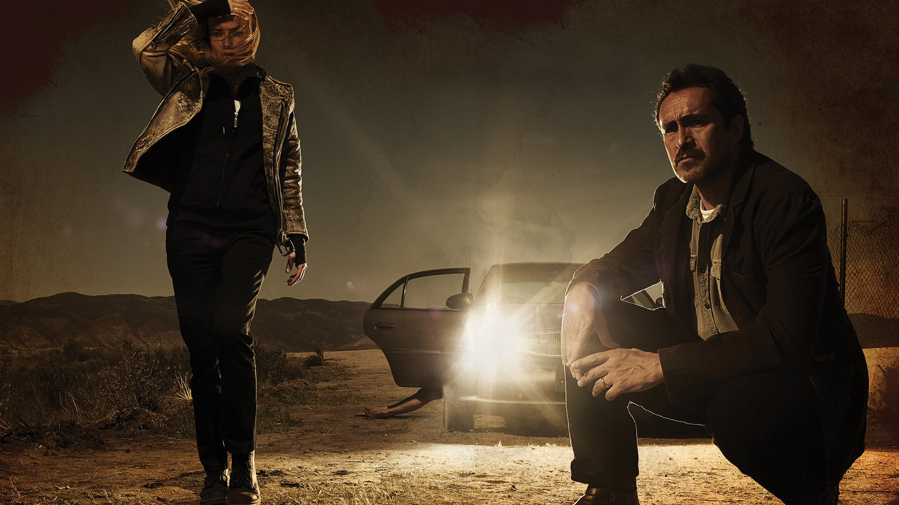
The BridgeDos detectives deben cazar un asesino en serie que opera a ambos lados de la frontera entre México y Estados Unidos.
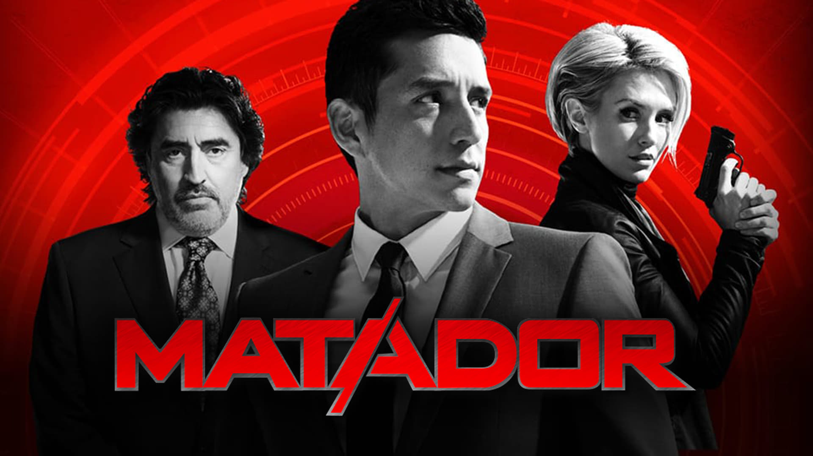
MatadorLa popular estrella de fútbol, Tony Matador Bravo lleva una doble vida como agente encubierto de la CIA.
Un condecorado SEAL de la Marina se convierte en investigador privado en Hawai
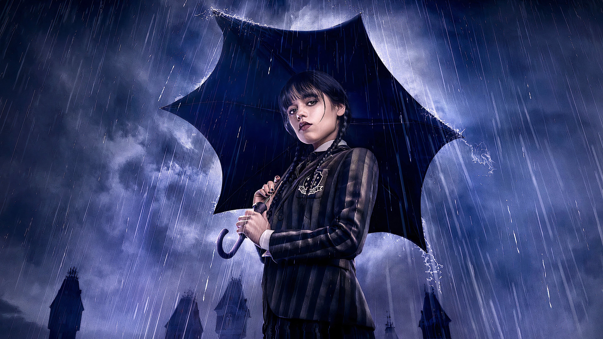
WednesdayMiércoles Addams investiga una oleada de asesinatos en la Academia Nunca Más.
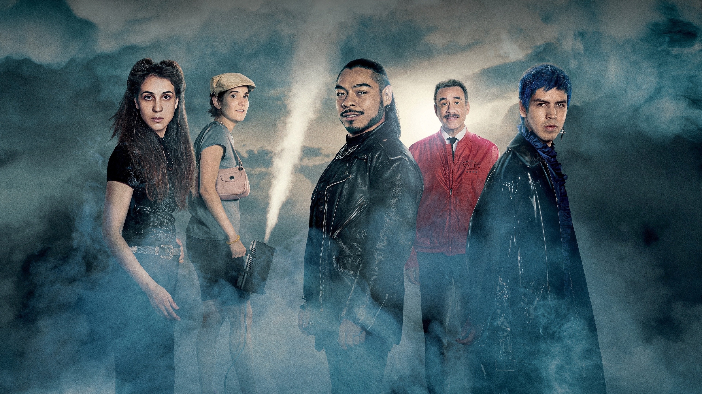
Los EspookysUn grupo de amigos proporcionan escenas terroríficas a los clientes que así lo pidan.
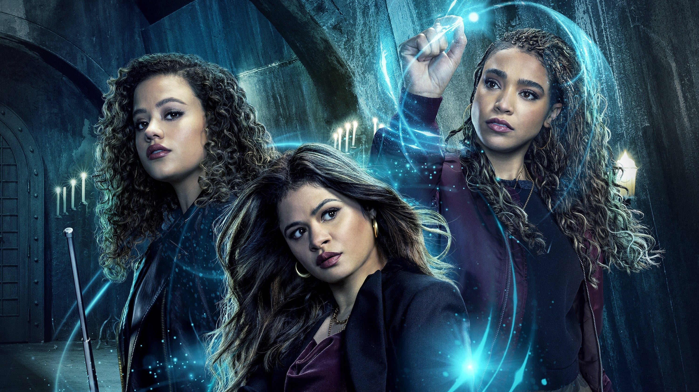
CharmedLas hermanas, Macy, Mel y Maggie Vera, descubren que son tres de las brujas más poderosas de todos los tiempos.
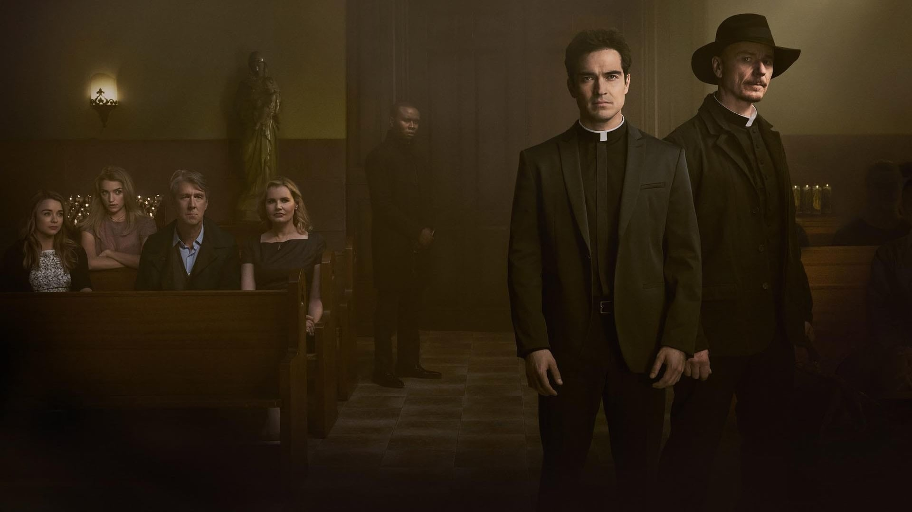
The ExorcistUna madre pide ayuda al Padre Tomás Herrera cuando comienza a notar presencias y voces en su casa.
Los hermanos Seth y Richard se fugan hacia México pero acaban en un club plagado de vampiros donde tendrán que sobrevivir
 Penny Dreadful: City of Angels
Penny Dreadful: City of Angels
Los Ángeles de 1938 es el escenario de conflicto entre la deidad Santa Muerte y otros aliados con el Diablo.
Miércoles Addams investiga una oleada de asesinatos en la Academia Nunca Más.
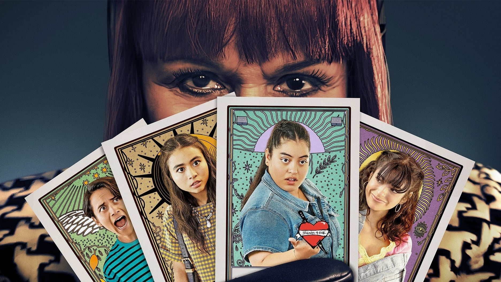
FreeridgeCuatro adolescentes intentan revertir una maldición luego de que una peculiar caja antigua trajera todo tipo de infortunios a sus vidas.
Los hermanos Tal y Janelle empiezan a vivir en Atlanta, dejando atrás su hogar, su colegio y sus academias de baile.
Victor Salazar, un nuevo estudiante, se adapta a una nueva ciudad y descubre su orientación sexual.
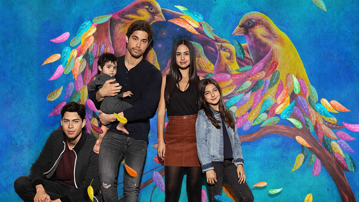
Party of FiveLos hermanos Acosta atraviesan las luchas de la vida diaria para sobrevivir después de que sus padres son deportados a México.
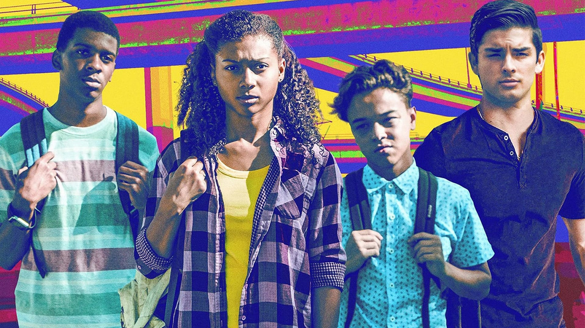
On My BlockCuatro amigos de barrio concurren a la escuela ubicada en el centro de la ciudad.
El baile, el sexo, el romance y el misterio están en el corazón de esta escuela del centro de la ciudad en el este de Los Ángeles
Cuatro adolescentes intentan revertir una maldición luego de que una peculiar caja antigua trajera todo tipo de infortunios a sus vidas.
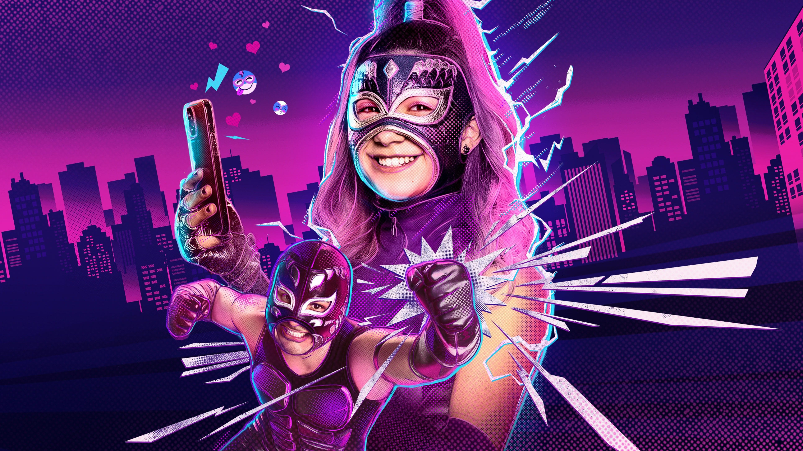
Ultra Violet and Black ScorpionViolet Rodríguez se convierte en una superheroína que lucha contra el crimen junto a su tío Cruz
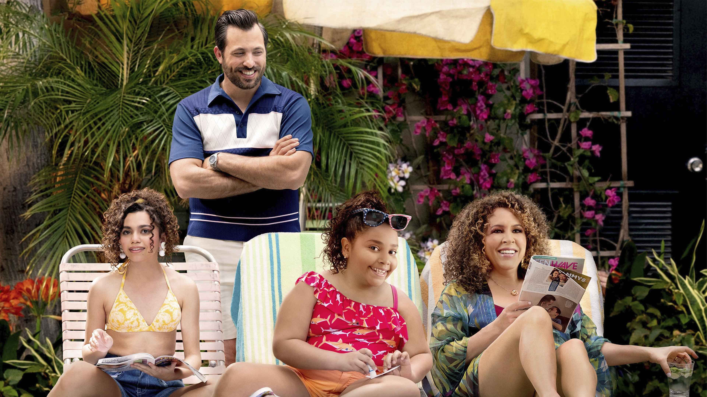
Gordita ChroniclesUna reportera recuerda su infancia como una inmigrante dominicana que creció con su familia en la década de 1980 en Miami.
Julie perdió la pasión por la música con la muerte de su madre. Pero cuando tres chicos fantasmales le devuelven la fe en su talento, juntos deciden armar una banda.
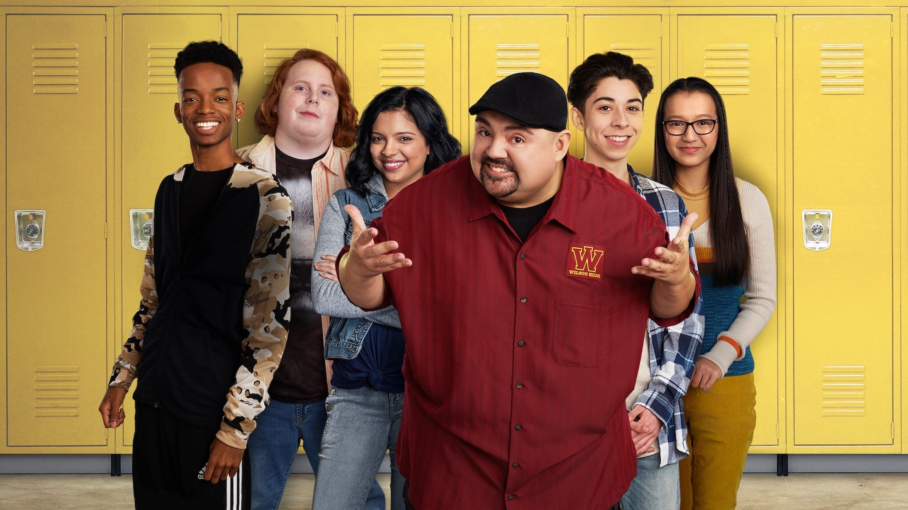
Mr IglesiasUn divertido profesor trata de hacer la diferencia en las vidas de algunos estudiantes de bajo desempeño.
Tras mudarse al otro lado del país para dedicarse a la robótica, Ashley Garcia se adentra en el universo desconocido de la adolescencia.
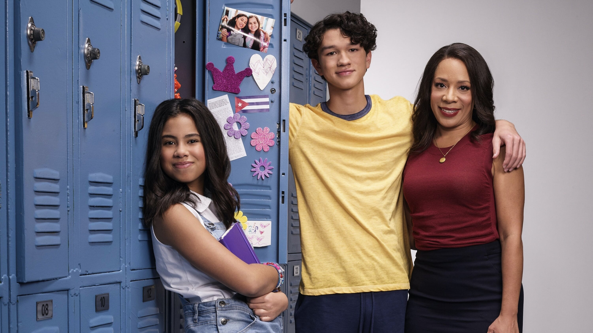
Diary of a Future PresidentElena navega por los altibajos de la escuela secundaria y comienza su viaje para convertirse en la futura presidente de los Estados Unidos.
Violet Rodríguez se convierte en Ultra Violet, una superheroína que lucha contra el crimen junto a su tío luchador, Cruz
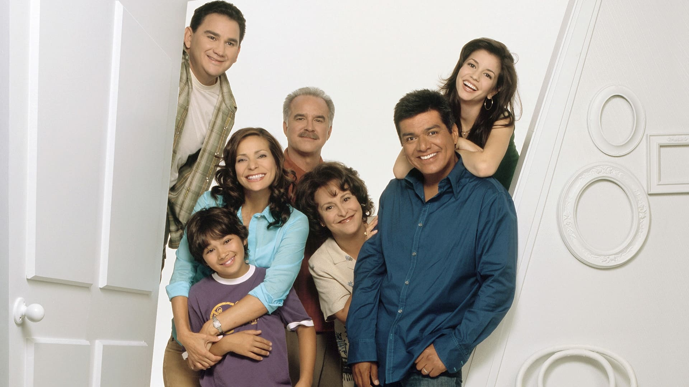
George Lopez ShowGeorge Lopez interpreta al gerente de una fábrica de Los Ángeles mientras intenta lidiar con su excéntrica familia.
 Greetings from Tucson
Greetings from Tucson
David Tiant, de 15 años, enfrenta los desafíos de crecer en una familia étnicamente mixta y en ascenso.
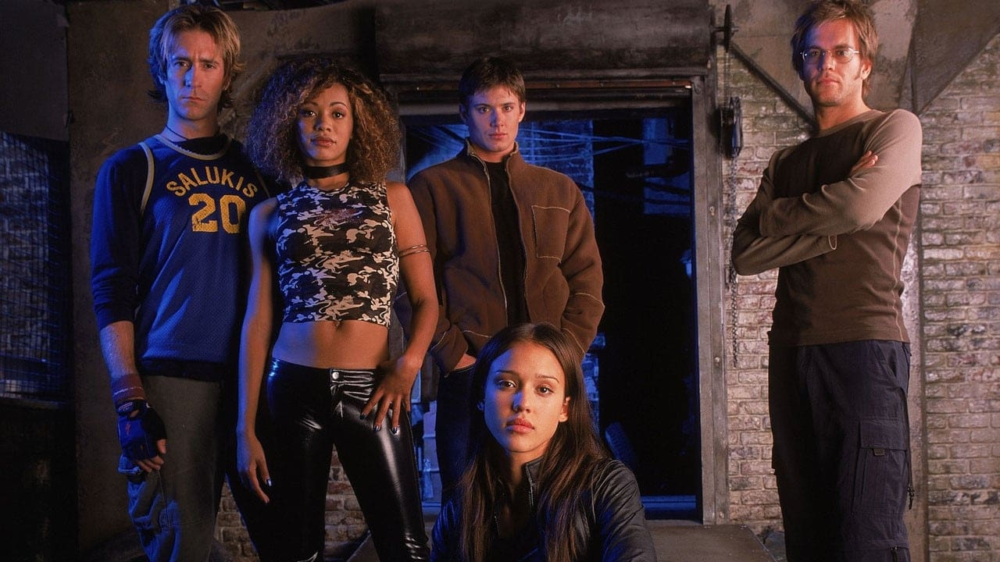
Dark AngelMax, un prototipo humano que ha sido alterado genéticamente por el ejército para crear un grupo combate.
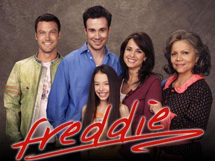
FreddieFreddie debe convivir con su impulsiva cuñada, su pragmática hermana con su hija de 13 años y su irascible abuela.
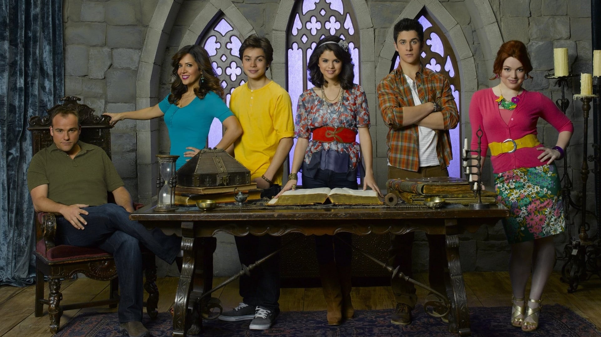
Wizards of Waverly PlaceLa familia Russo desciende de una ancestral familia de magos.
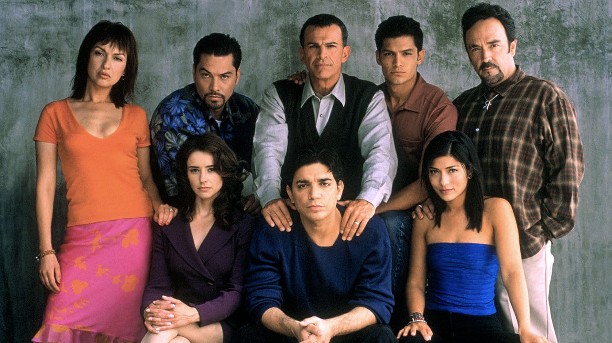
Resurrection BlvdLos Santiago son una familia del Este de Los Ángeles cuyos sueños están enraizados en el mundo del boxeo.
George Lopez interpreta al gerente de una fábrica de Los Ángeles mientras intenta lidiar con su excéntrica familia.
La maestra Alicia Adams quiere que sus estudiantes de secundaria se concentren más en experimentar la vida y menos en las calificaciones.
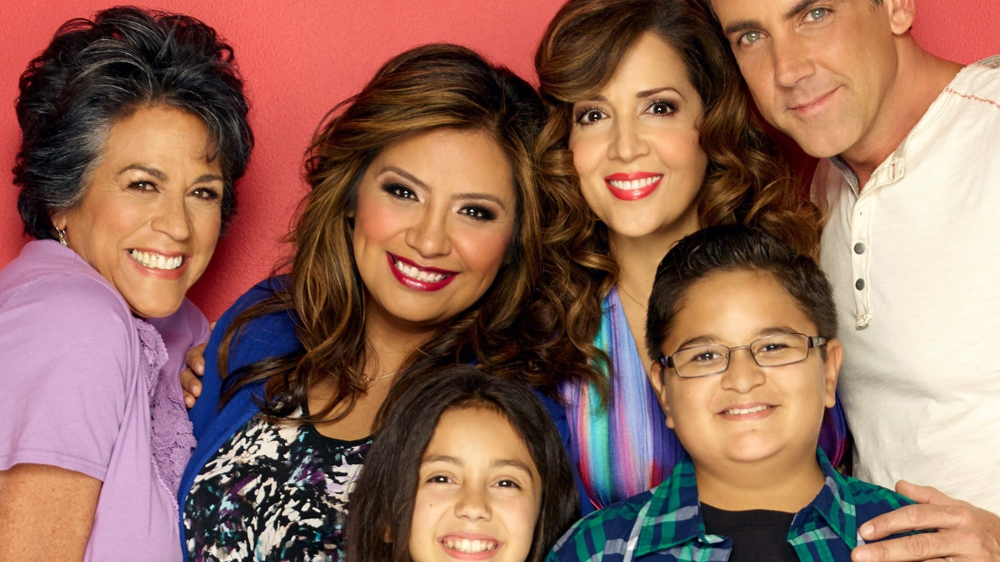
CristelaLa familia de Cristela no ve con buen ojos su nuevo trabajo de becaria en una conocida firma de negocios.
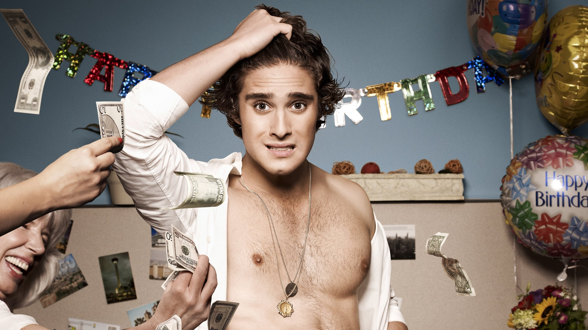
UnderemployedCinco amigos aprenden a lidiar con las duras realidades de la vida después de la universidad.
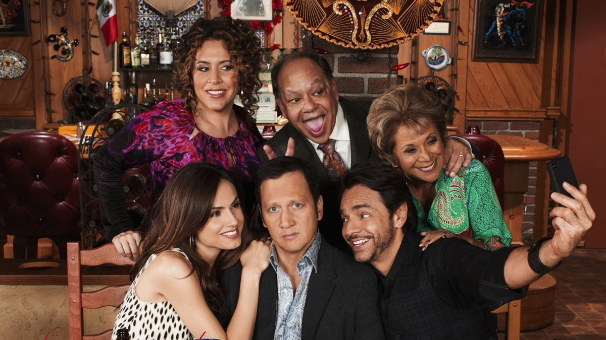
RobUn hombre solitario, Rob, se casa con una gran familia mexico-americana.
George Lopez interpreta al gerente de una fábrica de Los Ángeles mientras intenta lidiar con su excéntrica familia.
Greetings from Tucson
David Tiant, de 15 años, enfrenta los desafíos de crecer en una familia étnicamente mixta y en ascenso.
Max, un prototipo humano que ha sido alterado genéticamente por el ejército para crear un grupo combate.
Freddie debe convivir con su impulsiva cuñada, su pragmática hermana con su hija de 13 años y su irascible abuela.
La familia Russo desciende de una ancestral familia de magos.
Los Santiago son una familia del Este de Los Ángeles cuyos sueños están enraizados en el mundo del boxeo.
George Lopez interpreta al gerente de una fábrica de Los Ángeles mientras intenta lidiar con su excéntrica familia.